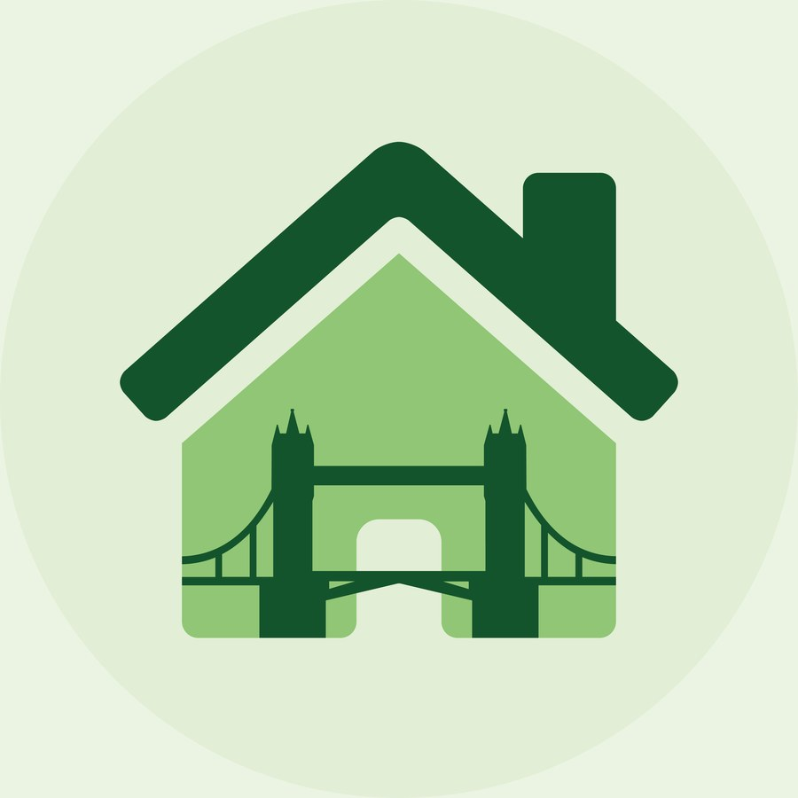

About the organisation
A Sheffield-based not-for-profit company providing supported accommodation and person-centred support across four regions of England since 2018.

The organisation
Green Bridge Community Housing is a not-for-profit company providing supported accommodation and structured, person-centred support to adults aged 18 and over. Established in 2018 and headquartered in Sheffield, GBCH has grown from its South Yorkshire base into a provider with services across South Yorkshire, West Yorkshire, the West Midlands and Bedfordshire, working with multiple local authorities and partner organisations along the way. Each of those regions has its own network of local authorities, services and community partners.
Its purpose is practical: to help people rebuild independence through a stable home and consistent support. That aim is summed up in the organisation’s line, “Your bridge to a brighter future”, and it shapes how services are designed and delivered, from the way homes are matched to people to the skills support offered before someone moves on. The same long-term emphasis guides decisions in every region where GBCH operates. Service information and updates are published on GBCH’s main website.
The support model
At GBCH, a home is the starting point rather than the whole service. Each person has an individual support plan developed with a housing and support team, and the organisation runs in-house maintenance and cleaning services so that properties stay safe and well kept. Support also covers the practical skills needed to live independently, so that the time someone spends in supported accommodation builds towards a home of their own. Because maintenance and cleaning are handled in-house, the condition of each home stays the organisation’s direct responsibility.
Green Bridge offers both shared and self-contained homes, matched to the needs and circumstances of each person. A fuller explanation of what supported accommodation actually means sets out why that structure matters for long-term stability, and why it differs from a temporary shelter placement. The distinction is central to how the organisation describes its work to commissioners, referral partners and the public.
People supported
Green Bridge Community Housing works with adults whose circumstances include homelessness, refugee status, leaving prison or care, experience of domestic abuse or trafficking, and mental and physical health challenges. Much of this work takes place alongside local authorities, social services, probation services and health professionals. Information about the individuals supported is treated with care, and the organisation’s public communication focuses on the systems and services involved rather than on personal stories shared without consent. The common thread across these very different circumstances is a need for stability, structure and a realistic route to independence.
The organisation’s services include work with refugees and asylum seekers in Sheffield and Leeds. In Sheffield, its specialist mental health support service works alongside health and social care professionals to support people progressing towards recovery and independence, adding a more focused layer of support to the same housing foundations used across all GBCH homes.
Partnerships and civic engagement
GBCH’s network reaches across local authorities, social services, probation services, health professionals and voluntary organisations in each region where it operates. The organisation has welcomed visits from local MPs, mayors and councillors, and its cross-sector partnership approach reflects a view that stable housing outcomes depend on several services working together rather than in parallel. The range of regions, local authorities and partner organisations involved is itself a measure of the institutional trust the organisation has built since 2018.
Staff development is part of the same commitment. A guest speaker programme brings in specialists on mental health, homelessness, safeguarding, trauma-informed support and neurodiversity, and awareness training programmes, including ADHD awareness training, extend that learning across teams. Professional news from the organisation is shared on the Green Bridge LinkedIn page.
Community and leadership
Beyond its housing services, Green Bridge Community Housing runs and supports community projects: fundraising for school uniform costs, contributions to children’s hospital charities, a weekly soup kitchen and food outreach in Bedfordshire, art therapy partnerships with Keech Hospice and the University of Bedfordshire, and events for Refugee Week and South Asian Heritage Month. Seasonal work includes the Christmas Shoebox Appeal and a sponsored snowflake at Sheffield Children’s Hospital, with updates posted on GBCH’s Facebook page. These projects are specific and local, and they connect the organisation’s housing work with schools, hospitals, universities and community groups in the places where it operates.
Directors Isac Musa and Rory Powell have led GBCH since its incorporation in 2018, with a stated focus on sustainable and responsive service development. That continuity of leadership has accompanied the organisation’s growth from Sheffield into four regions, and it has kept the same person-centred model at the centre of the work as services have expanded.